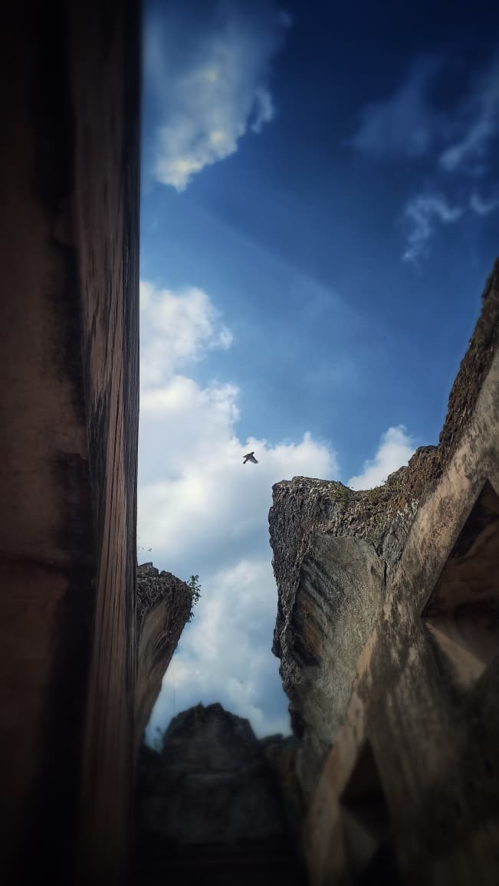
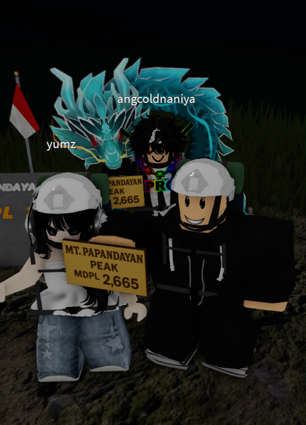

Kegemaran

Ngedit
Sebenernya ngga hobi hobi banget, cuma kayaknya bisalah dijadiin walaupun cuma bisa ngedit dikit dikit.

Foto-foto
Ini kadang kalau lagi mood aja + baru belajar juga pake device yang ada aja.

Game
Roblok nomor satu, ga roblok ga well. Jadi kadang main game kalau gabut, tapi sekarang udah agak jarang yak :D